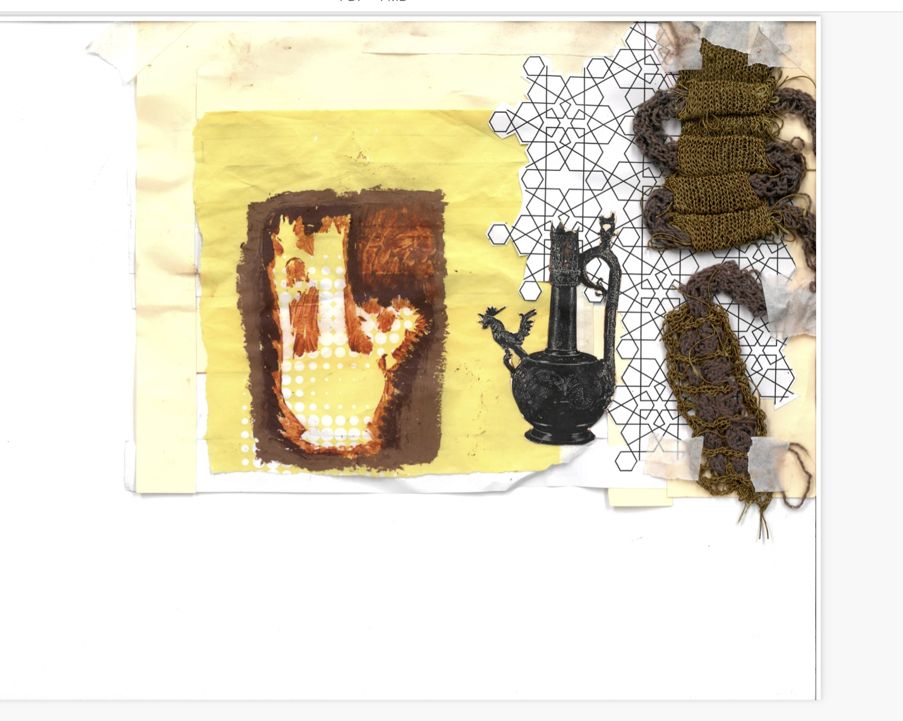

Tasseography (2022) was a miniature project completed during Esaadi's tenure at Chelsea College of Arts. In response to the brief 'design for good' with the objective to design with sustainably and ethos in mind, Esaadi responded with a series of textile and collage based outcomes, highlighting indigenous and pre-colonial forms of design from the Pan-Arab region, as well as the repurposing of materials for spiritual purposes.